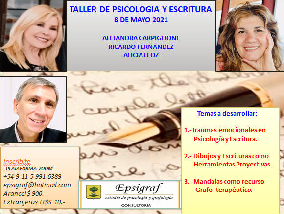
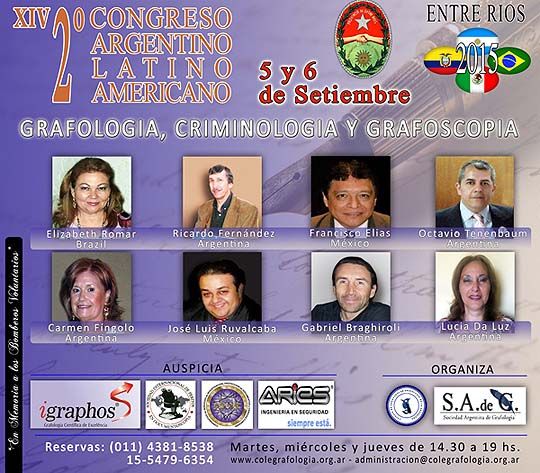
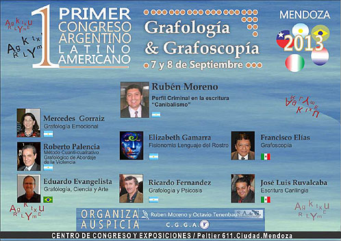

|
|
PRÓXIMOS SEMINARIOS 2021

Para informarse de seminarios y jornadas:
rafpsicografo@yahoo.com.ar
SEMINARIOS PASADOS
JUNIO 2018
- DISERTACIÓN EN CONGRESO ORGANIZADO POR
“PROGRAF” Ciudad de Córdoba , 9 Y 10 Junio 2018
- ICEA ALTOS ESTUDIOS: “Cerebro y Escritura”,
Sábado 16 junio 2018, de 10 a 13.
JULIO 2018
- MAR DEL PLATA, “Las Psicosis y sus
Grafismos”, Sábado 14 julio 2018, de 14 a 20.
AGOSTO 2018
- MERCEDES: “Grafoneuropsicoanálisis” , Sábado
4 agosto 2018
- ROM Ciudad Córdoba:
“Grafoneuropsicoanálisis”, 11 y 12 agosto 2018.
- AGER PARANA (Entre Ríos): “Las Inteligencias
y sus Grafismos”, Sábado 25 de agosto.
OCTUBRE 2016
- Sábado 15 octubre: Premios Michón de la
grafología, disertación sobre “El cerebro, la escritura y las
disgrafiás”, Laguna de los padres, 15 octubre 2016
- INSTITUTO ROM CIUDAD DE CÓRDOBA
Sábado 22 y domingo 23 de Octubre
Tema: “El cerebro, la inteligencia emocional, las inteligencias
múltiples y la escritura”
NOVIEMBRE 2016
- Sábado 5 Noviembre: “Grafología y neurosis”,
CES, Talcahuano 78 CABA, de 10 a 13
- Sábado 12 Noviembre: “Los trastornos de
ansiedad y sus grafismos”, Instituto Xandró Olivos, Ricardo Gutierrez
1576, de 10 a 13
DICIEMBRE 2016
- Sábado 3 diciembre: Jornada neurociencias y
Grafología, junto a Adriana Ortiz y Alejandra Capriglione. Disertación
sobre: “El cerebro, la escritura y su variabilidad”, de 14 a 19, Valle
49, 2° C, Boedo.
MAYO 2016
- JORNADA DE NEUROCIENCIAS Y GRAFOLOGÍA, JUNTO
A ADRIANA ORTÍZ Y ALEJANDRA CAPRIGLIONE.
Disertación sobre: “El cerebro, la escritura y las disgrafías”
Sábado 7 mayo de 9 a 17. Viamonte 176 - 3 A. CABA
Ver ficha de la jornada
- SEMINARIO EN MAR DEL PLATA. Sábado 21 de
mayo 14 a 19
“El cerebro, la inteligencia emocional, las inteligencias múltiples y la
escritura”
- DISERTANTE DE CONGRESO DE GRAFOPSICOLOGÍA EN
MENDOZA
28 Y 29 de mayo
Tema: “Los trastornos límite de personalidad y sus grafismos”
JUNIO 2016
- INSTITUTO XANDRÓ
Ricardo Gutierrez 1574 - Olivos
Sábado 18 junio, 9 a 13.
Tema: “El cerebro, la inteligencia emocional, las inteligencias
múltiples y sus grafismos”
AGOSTO 2016
- CES. Sábado 6 agosto 10 a 13.
Tema: “El cerebro, la escritura y las disgrafías”
Talcahuano 78 – 1 A
2015
OCTUBRE 2015
- 3 Octubre 2015 de 10 a 13: “El cerebro, la
escritura y su variabilidad”, Instituto “CES” Talcahuano 78, 1° A,
Ciudad Bs. As.
- 17 Octubre 2015, 10 a 13: “El cerebro, la
inteligencia emocional y la escritura”, Valle 49, 2°C, Boedo
- 24 Octubre 2015, 15 a 18: “El cerebro, la
inteligencia emocional y la escritura”, Biblioteca Olivos
- 31 Octubre: "El cerebro, la escritura y su
variabilidad", Instituto ROM, Ciudad de Córdoba
NOVIEMBRE 2015
- 7 Noviembre 2015, 16 a 18: “El cerebro, la
inteligencia emocional y la escritura”, Biblioteca Mariano Moreno,
Bernal.
CURSOS 2015
- Una clase semanal de 2 hs reloj: "Curso de
Grafología en IPI de Moreno"
Más info en Cursos
SEMINARIOS YA REALIZADOS, AÑO 2015/2014/2013
2015
SEPTIEMBRE 2015
- 2º Congreso Latinoamericano, 5 y 6 de
septiembre de 2015, en Entre Ríos

- 19 setiembre: "El cerebro, la inteligencia
emocional y la escritura", Instituto Xandró, Ricardo Gutiérrez 1574,
Olivos
AGOSTO 2015
- 29 de agosto, "El cerebro, la escritura y su
variabilidad", Ciudad de Mar del Plata
JUNIO 2015
- 6 de Junio 2015 de 9 a 13: "El cerebro, la
escritura y su variabilidad". Instituto Xandró. Ricardo Gutiérrez 1574
Olivos
- 6 y 13 Junio 2015 de 15 a 18: "El cerebro,
la escritura y su variabilidad", Bernal
- 27 junio 2015: "El cerebro, la escritura y
su variabilidad", Bella Vista
2014
SEPTIEMBRE 2014
- “Jornada Grafológica en ICEA”, 6 setiembre.
Disertante Invitado: Ricardo A. Fernández
con el tema “Grafología y Psicosis”
- “Grafología y Psicología”, 13 setiembre,
Instituto ROM, Ciudad de Córdoba
AGOSTO 2014
- “Grafología y trastornos de ansiedad”, 9
agosto, 10hs, Instituto Xandró, R Gutierrez 1574, Olivos
JULIO 2014
- “Trastornos narcisistas”, 5 de julio,
Biblioteca Olivos
JUNIO 2014
- “Taller de Grafología”, 7 de junio, 10hs, IPI
de Moreno
- “Grafología y Neurosis”, 7 de junio, 17hs, en
Biblioteca Mariano Moreno, Bernal
MAYO 2014
- “Madurez e Inmadurez en la escritura” , 17 de
mayo, 10hs, en
Instituto Xandró, Ricardo Gutierrez 1574, Olivos
- “Charla con autores”, 31 mayo, 10hs, en ICEA
ABRIL 2014
- “Monk y el TOC”, 26 abril, 10hs., en MAC
OCTUBRE 2014
- “Psicología y Grafología”, 11 de octubre, 15
hs, en Biblioteca Mariano Moreno de Bernal
- “Grafología y Psicosis”, 18 de octubre,
Instituto Xandró, R Gutiérrez 1574, Olivos
2013
SEPTIEMBRE 2013
- El 7 y 8 de septiembre 2013 se realizó el 1º
Congreso Latino Americano de Grafología y Grafoscopia, en la ciudad de
Mendoza.
Disertante Invitado: Ricardo A. Fernández
Podés ver las fotos
aquí

|
Entrando a "Fotos" podrás ver imágenes de
Seminarios ya realizados. |